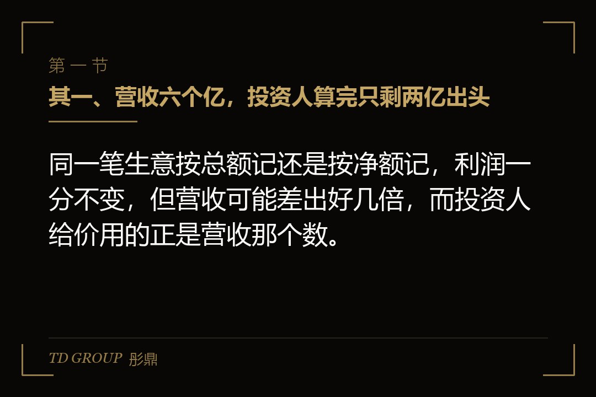
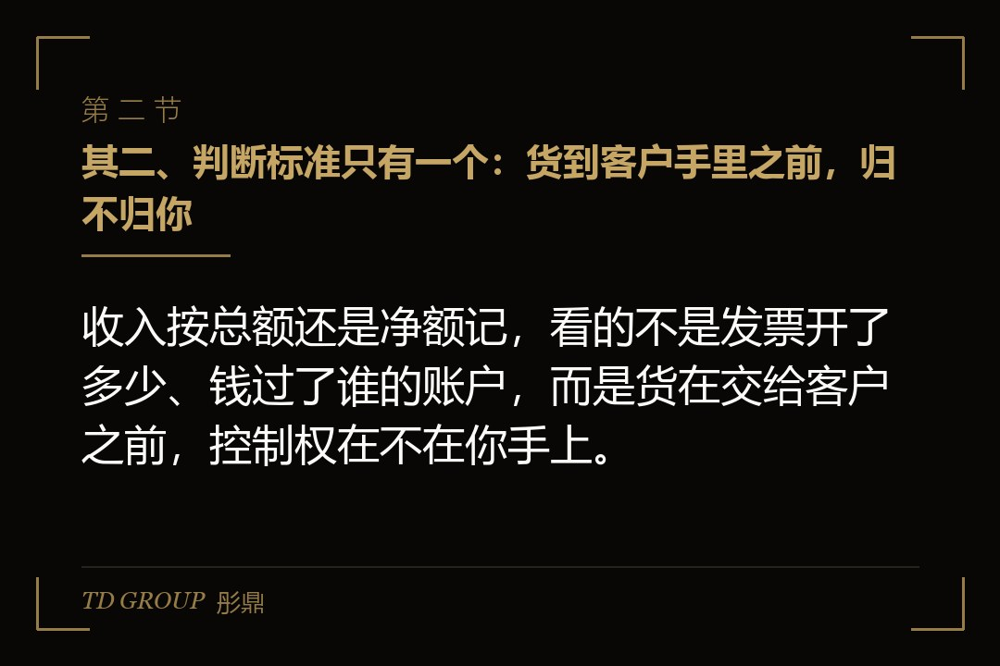
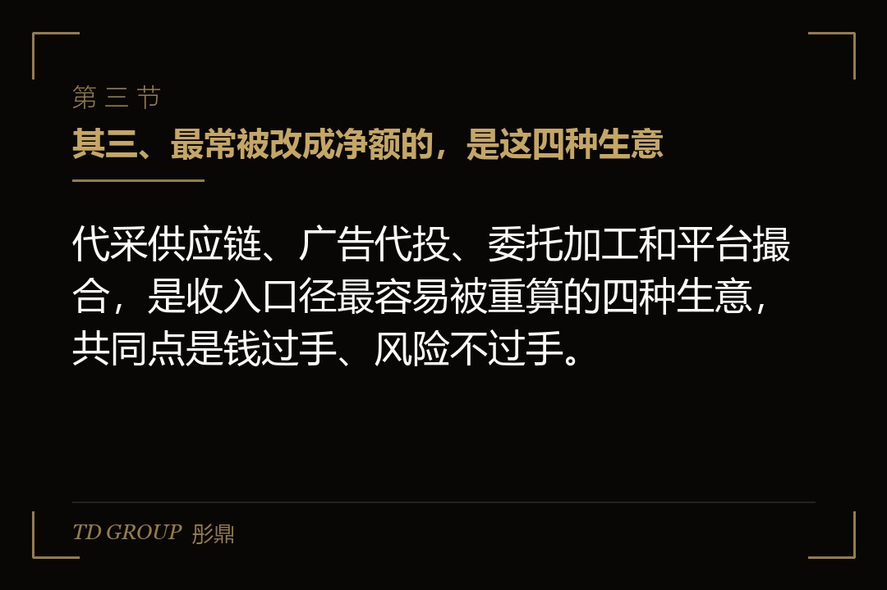

其一、营收六个亿，投资人算完只剩两亿出头

结论先行：同一笔生意按总额记还是按净额记，利润一分不变，但营收可能差出好几倍，而投资人给价用的正是营收那个数。
假设有家做电子元器件分销的企业，去年报表营收六亿，比前年涨了五成，净利两千万出头。老板拿着这组数去见投资人，按他自己的算法，一倍市销率，公司值六个亿，这一轮让出一成，要六千万。
尽调做到第三周，投资人的财务顾问把六亿拆开了。其中两亿是自营：公司自己跟原厂下单、货进自家仓库、压着库存，再按自己定的价卖出去，毛利一成五左右。
另外四亿是代采：客户指定品牌、型号和价格，公司跟原厂下单，货从原厂直接发到客户工厂，客户付款后公司再付原厂，中间加三个点的服务费。这四亿里，公司真正赚到手的是一千二百万。
顾问的意见很直接：代采这一块按准则应当按净额记。重算之后，营收是两亿一千二百万；前年同口径是一亿八千多万，增长率从五成变成一成多；毛利率从七个点跳到二十个点。利润没变，估值按市盈率重谈，差不多砍掉一半。
先把边界划清楚。账外收入、两套账、客户集中度、应收账款回款，各自都有专门的讨论，本文不展开。这里只讲一件事：一笔真实发生的生意，收入按总额还是按净额记，为什么会让估值被重谈。
其二、判断标准只有一个：货到客户手里之前，归不归你

结论先行：收入按总额还是净额记，看的不是发票开了多少、钱过了谁的账户，而是货在交给客户之前，控制权在不在你手上。
财政部二〇一七年修订的企业会计准则第14号收入准则，第三十四条写的是：企业应当根据其在向客户转让商品前是否拥有对该商品的控制权，来判断从事交易时的身份是主要责任人还是代理人。
能控制的，是主要责任人，按已收或应收对价的总额确认收入；不能控制的，是代理人，按预期有权收取的佣金或手续费确认收入。这套准则自二〇一八年一月一日起施行，境外上市常用的国际财务报告准则第15号，用的也是同一套控制权思路。
准则列了三种算作「能控制」的情形：先从第三方取得商品控制权再转给客户；能主导第三方代表自己向客户提供服务；取得商品后提供重大服务，把它和别的东西整合成一个组合产出再交给客户。
判断时要看的迹象也写在同一条里：是否承担向客户转让商品的主要责任，是否在转让前后承担了存货风险，是否有权自主决定所交易商品的价格，以及其他相关事实。
证监会发布的《监管规则适用指引——会计类第1号》专门有一条讲按总额还是净额确认收入，点名零售百货的联营模式、代为执行采购销售的供应链企业、电子商务平台企业，都要按这个原则判断是否取得了商品控制权。
拿开头那家分销企业对一遍：代采那四亿，型号和价格是客户定的，货不进自家仓库，客户不付款它也不付原厂。三个迹象里，它一个都占不住。所以问题不在于它有没有做这笔生意，而在于这笔生意里，它是卖货的人，还是替人跑腿的人。
其三、最常被改成净额的，是这四种生意

结论先行：代采供应链、广告代投、委托加工和平台撮合，是收入口径最容易被重算的四种生意，共同点是钱过手、风险不过手。
头一种是代采和供应链服务。客户定货、定价，企业用自己的名义下单、收付款，货从上游直发下游。账面上每一笔都是买卖，实质上是资金周转加上一点服务费。
第二种是广告代投和代充值。企业替客户在媒体平台上充值投放款，拿媒体给的返点。投放预算是客户定的，投哪里、投多少、效果好坏也归客户，企业经手的是整笔投放款，赚的是返点那一小截。
第三种是委托加工。原料是对方的，成品也卖回给对方，企业只收加工费。二〇二一年十一月，新疆证监局对一家农业类上市公司出具警示函：它做纺织的子公司替相关方加工皮棉、棉籽，二〇二〇年按总额记了六千七百多万收入，可它只拿固定加工费、不承担产品价格波动的风险，实际应记的只有四百六十多万，多记的部分占到当年收入的百分之五以上。
第四种是平台撮合。平台上成交的是买家和卖家，平台收的是服务费。二〇二三年，一家做工业品网上交易的上市公司把收入口径改成净额法，年度营收从七百多亿调成四百亿出头，一下子少了三百多亿。按准则的逻辑，这类口径调整本身并不改变利润，变的只是报表上那个规模数。
这四种生意都可以是好生意，客户也确实离不开这份服务。问题从来不在生意本身，而在于把「经手的钱」当成了「做成的收入」，再拿这个数去谈价。
其四、利润一分没少，估值为什么跟着缩了
结论先行：净额法不改变毛利和净利，但会同时改掉营收规模、增长率、毛利率和市销率，而早期和成长期的估值，恰恰最依赖这几个数。
有会计师在接受证券媒体采访时说得很清楚：总额法和净额法对毛利、净利没有影响，但会让市销率、净资产收益率这类指标跟着变。换句话说，赚到手的钱没变，拿来讲故事的那几个数全变了。
回到开头那家企业。老板报价用的是一倍市销率，前提是营收六亿；换成两亿一千二百万，同一个倍数只值两亿出头。投资人最后按市盈率谈，两千万净利给十五倍左右，是三个亿，已经比老板心里的数少了一半。
增长率的变化更伤。五成的增长，投资人愿意为明年的规模付钱；一成多的增长，就只是一家稳定经营的分销商。估值倍数本身，也会跟着增长率一起往下走。
毛利率反过来会变高，从七个点跳到二十个点，看上去是好事。可投资人的下一个问题是：原来报的七个点是什么，报表还有哪些地方要重算？一个口径被翻过来，剩下的每个数都要重新核一遍，尽调时间拉长，交割节奏被打乱。
还有一类影响写在协议里。很多投资协议的业绩承诺、估值调整和回购触发条件，写的是「经审计的营业收入」。口径一换，同一家公司、同一年的经营，可能从达标变成不达标。
其五、尽调是怎么把它翻出来的
结论先行：投资人判断总额还是净额，不看你怎么记账，而是去翻合同条款、物流单据和资金流向，看货和风险到底在谁手上停留过。
合同是头一份要看的材料。价格谁定，退货和质量问题找谁，客户能不能直接向上游索赔，代采服务费是按固定比例还是自己定价。合同里写着「按客户指定价格采购」「质量问题由原厂负责」，基本就定性了。
物流单据是第二份。货有没有进过自家仓库，入库单、出库单、盘点记录能不能对上；运单上的发货地和收货地，是不是从上游直接到下游。货从来没有停在你手里，就很难说你承担了存货风险。
资金流向是第三份。是不是客户先付款、企业再付上游，即所谓背靠背；有没有垫资，垫资的钱是不是客户保证会还。没垫过一分钱、也没压过一天货，那点服务费就是这笔生意的全部收入。
还有一种情况看上去像控制了货，实际上没有。二〇二三年，一家开展日用品贸易业务的深交所上市公司更正了此前年度的报表，把这块业务的营业收入和营业成本同时调减两千四百多万，理由是它虽然取得过商品的法定所有权，但这个所有权只是「瞬时性、过渡性」的，并没有真正控制商品。
另一个常见误解是发票。有会计师在同一篇报道里指出，即便全额开了发票，或者承担了一些信用风险，也不一定就能作为按总额确认收入的理由。发票是税务上的安排，不是会计上判断控制权的依据。
其六、自己不改，等别人替你改，代价更大
结论先行：收入口径该在融资之前自己改，被尽调或监管替你改的时候，改掉的就不只是一个数，还有你对这份报表的信用。
二〇二六年六月，江苏证监局对一家化工上市公司出具警示函，其中一项是电力代收代付业务原来按总额法确认收入，调整后，二〇二三年的营业收入和营业成本各减少五千多万。金额在它的报表里并不算大，但它以警示函的形式出现，意味着这件事在信息披露的层面被记了一笔。
对还没上市的企业，代价换了一种形式。再假设一家做广告代投的公司，去年按总额记营收三亿，其中真正属于它的返点是一千五百万。它和投资人签的对赌写着：次年经审计营收不低于四亿，否则创始人按约定回购。
次年公司换了一家审计机构，对方坚持代投业务按净额确认。营收一下子只剩两千万上下，经营一点没变，对赌却已经触发。创始人再去解释「以前一直是这么记的」，对方拿出的就是准则第三十四条。
有一条线要分清：总额法和净额法是对一笔真实生意的会计判断，判错了是差错，更正就是；而虚构交易、左手进右手出、货根本没动过的「走单」，是在制造不存在的收入，那已经不是口径问题，是造假。
尽调时投资人最怕的，是分不清你属于哪一种。一家企业如果被重算出大量净额业务，还拿不出物流和资金单据证明交易真实，前一种问题就会被当成后一种来查。
其七、融资之前，先自己算一版净额
结论先行：准备融资的企业，应当在见投资人之前，按业务线把总额和净额各算一版，用毛利额讲规模，而不是用经手的货款讲规模。
头一件事，是把收入按业务线拆开。自营、代采、代投、加工、撮合各有多少，每一块对照第三十四条的三个迹象过一遍：主要责任在谁，存货风险在谁，价格谁定。说不清的，先按净额算。
第二件事，是请审计师在融资之前就确认口径，并且把净额版本的历史数据一起做出来。前后三年用同一个口径，增长率才算得清，投资人才不会在尽调第三周重新发现一遍。
第三件事，是换一种讲规模的方式。对净额业务占比高的企业，毛利额、服务的客户数、经手的交易额可以分开讲，但要明说哪个是收入、哪个只是经手的钱。把两个数混在一起报，是被砍价的起点。
第四件事，是在签协议时看清对赌和估值调整的指标定义。写营收的，要写明按什么口径；能改成毛利额或净利润的，尽量改。口径一旦在协议里写死，后面任何一次审计意见的变化，都会直接变成创始人的责任。
还有一个判断要诚实地做：如果你想按总额记，就得真的承担总额生意的风险，自己定价、自己压货、自己对客户负责。为了把收入做大去改合同条款，而业务实质没变，改出来的只是一份更经不起尽调的合同。
我们跟华尔街俱乐部有合作，接触过不少做供应链和渠道生意的企业。在融资里被砍价的，多半不是生意不好，而是见投资人时报的那个营收数，经不起第三十四条的一次重算。
最后留一个问题。假设你就是开头那家分销企业的老板，代采业务利润稳定、客户也离不开你：你是按净额把营收降到两亿去谈，还是先花一年把代采改成自营、真正压上库存再去融资？如果是你，你会怎么选？